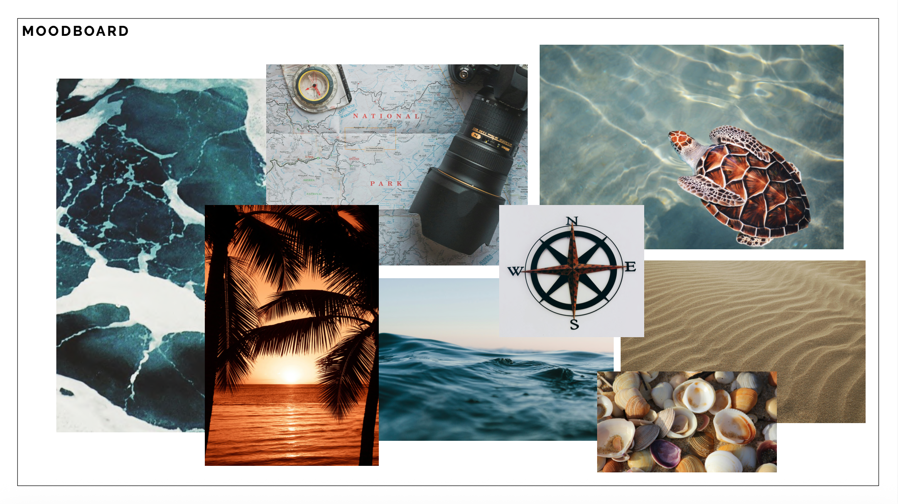
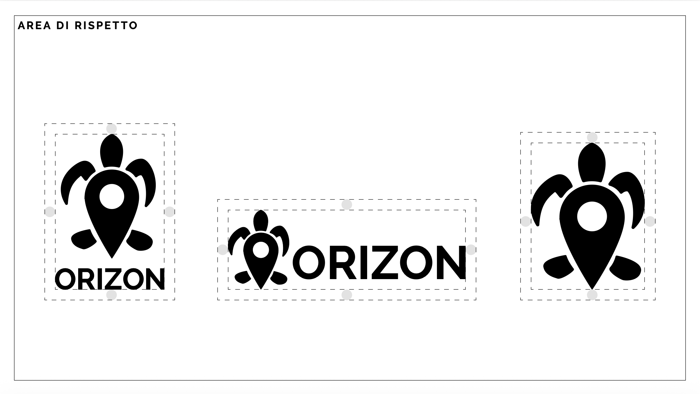
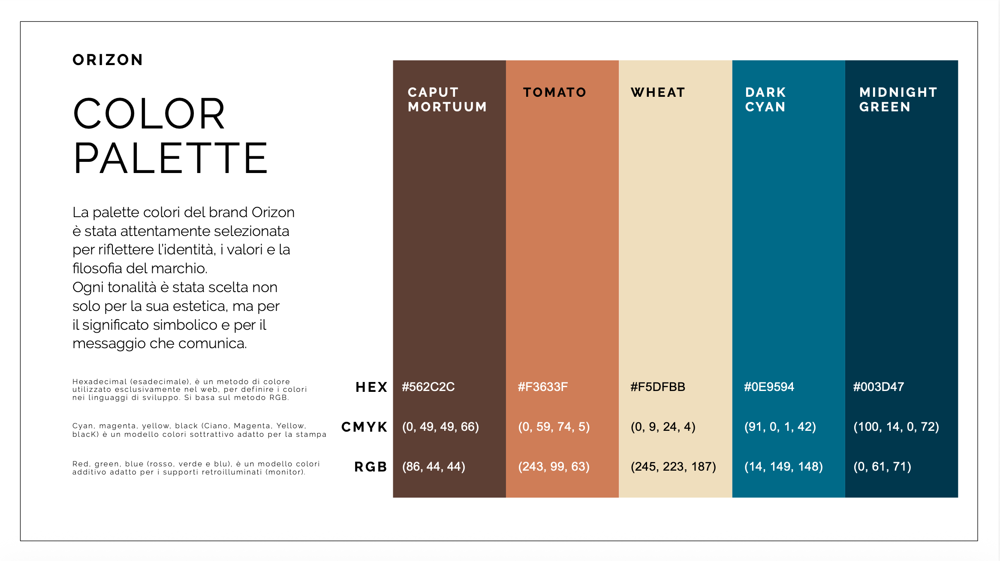
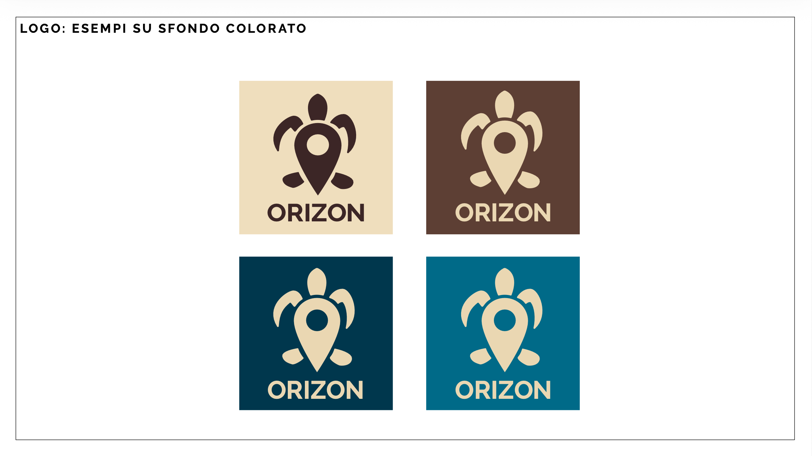
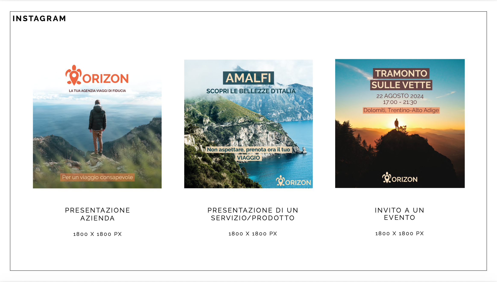
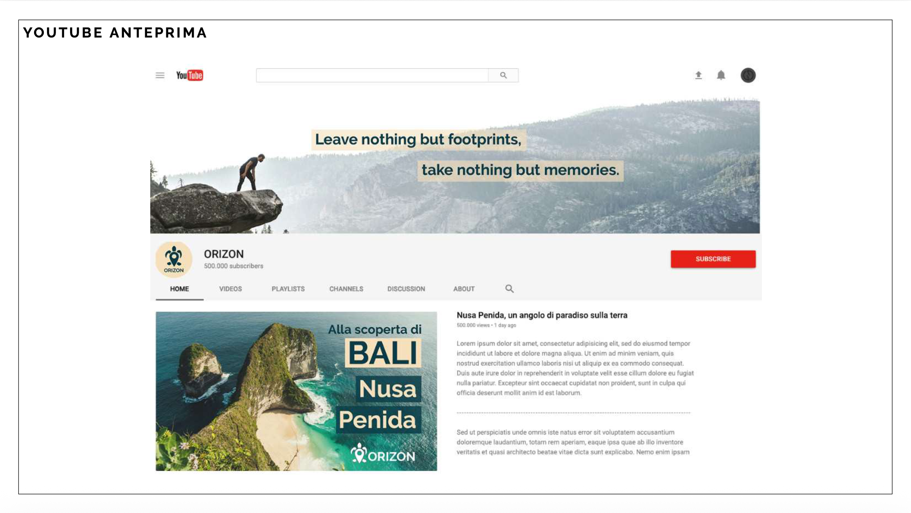
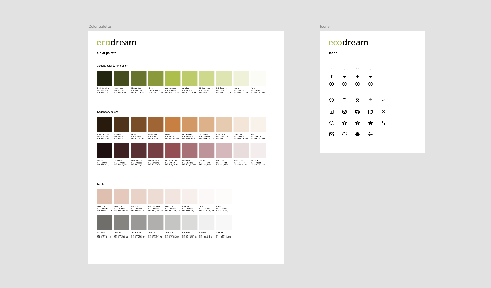
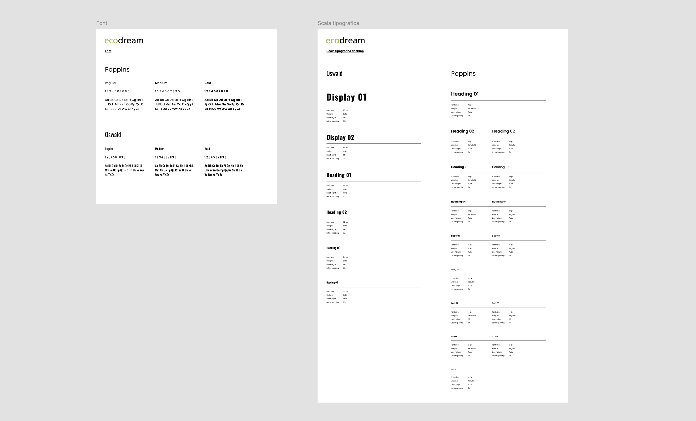
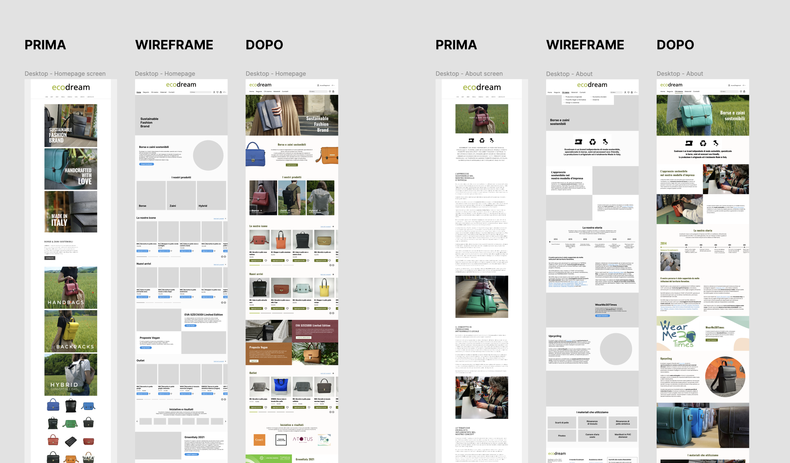
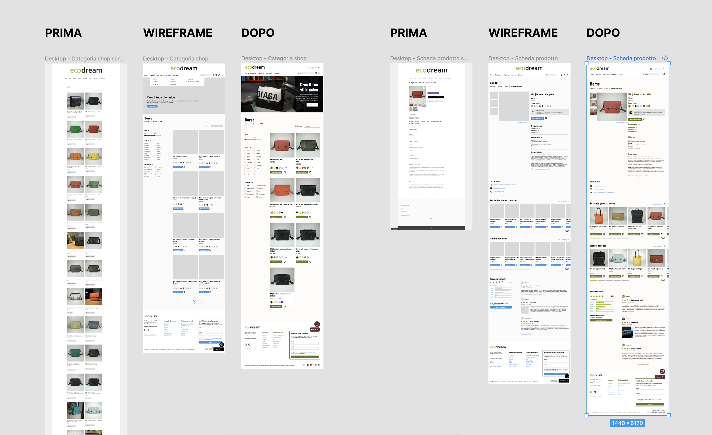

Projects
Orizon Travel Agency – Brand Identity
Rebranding for a sustainable and experience-driven travel brand
Orizon is a travel agency focused on creating authentic and sustainable travel experiences.
The goal of this project was to develop a cohesive brand identity that reflects its values of
conscious travel and cultural respect.
I designed a complete visual system, including logo, typography, and color palette, along with a
brand book to ensure consistency.
I also created social media templates and cover assets to strengthen the brand’s digital presence.
The result is a modern and recognizable identity that communicates Orizon’s mission: turning travel
into a meaningful and responsible experience.






Ecodream – Website Redesign & UI System
Improving usability and visual identity for a sustainable fashion brand
Ecodream is an independent sustainable fashion brand specializing in eco-friendly bags and
accessories, made from recycled and upcycled materials and crafted in Italy.
The project focused on improving the website’s usability and accessibility while enhancing its
visual identity. I conducted an analysis of the existing website, identifying
key issues and areas for improvement.
Based on these insights, I designed wireframes and developed the final UI.
I also created a complete design system, including color palette, typography, icons, and UI
components such as buttons and checkboxes,
ensuring consistency across the entire user experience.
The result is a more intuitive, accessible, and visually cohesive digital experience aligned with
the brand’s sustainable values.




